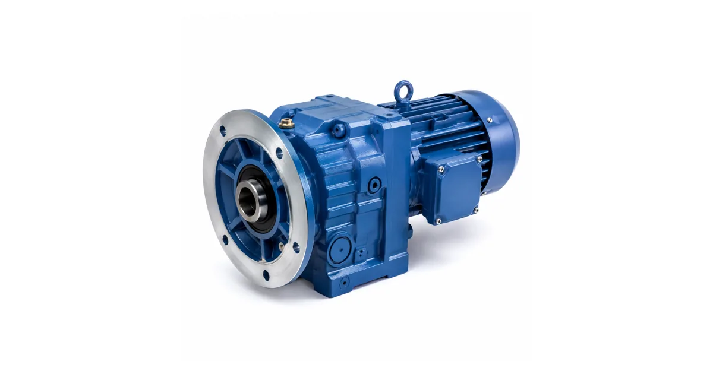
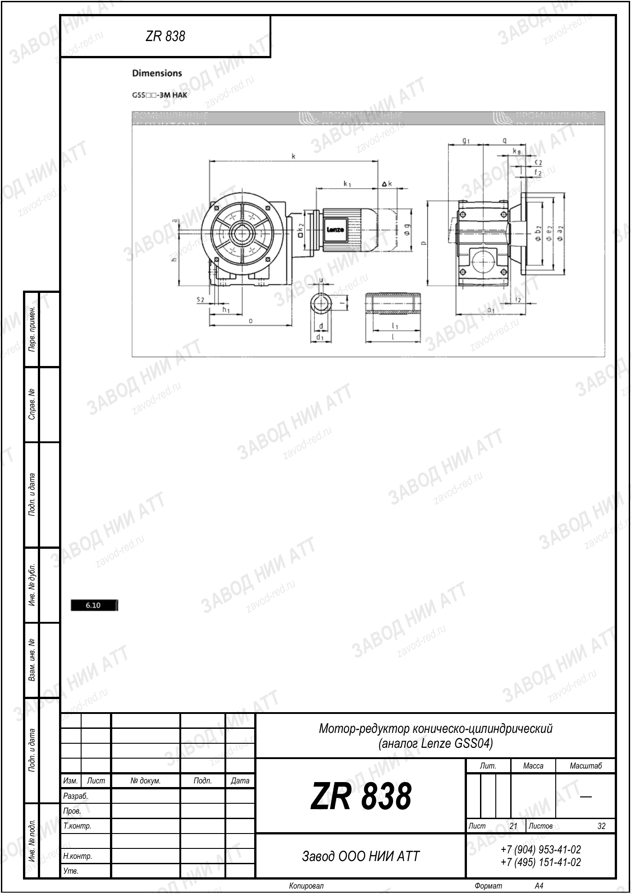

Собственное производствоПромышленные редукторы для производителей оборудования•Отгрузка по всей России•Аналоги SEW, NORD, Bonfiglioli без переделки рамы•Расчёт и КП за 15 минут•Гарантия 36 месяцевПромышленные редукторы для производителей оборудования•Отгрузка по всей России•Аналоги SEW, NORD, Bonfiglioli без переделки рамы•Расчёт и КП за 15 минут•Гарантия 36 месяцев
Опыт инженеров Завода Редукторов · время чтения ~6 минут
Плановое обслуживание редуктора Lenze дешевле любой аварийной остановки линии и заметно продлевает ресурс привода. Соосные, коническо-цилиндрические и червячные мотор-редукторы Lenze служат долго, если вовремя контролировать масло, уплотнения, подшипники и температуру. Разберём регламент ремонта и обслуживания Lenze по интервалам и что проверять на каждом этапе.
Регламент ТО редуктора Lenze
Обслуживание выстраивают по наработке и календарю. Базовый регламент для мотор-редукторов Lenze в типовых условиях:
Интервал
Операции
Ежесменно
контроль шума, вибрации, нагрева, отсутствия течей
Интервалы корректируют под режим работы (S1 непрерывный или повторно-кратковременный), температуру и запылённость. В тяжёлых условиях периодичность увеличивают.
Контроль и замена масла
Уровень масла проверяют на остановленном и остывшем редукторе по смотровому глазку или пробке. Масло меняют по наработке и по состоянию: потемнение, запах гари, эмульсия, металлическая взвесь — повод не откладывать. Тип и класс вязкости берут из паспорта: цилиндрические — минеральное или ПАО, червячные — синтетическое PAG. При недоступности оригинала подбирают аналог по ISO VG и типу основы.
Не смешивайте PAG-масла с минеральными и ПАО — они несовместимы. При переходе на другую основу редуктор полностью сливают и промывают. Долив «чем есть» без учёта совместимости — частая причина ускоренного износа.

Типовое исполнение соосного привода
Уплотнения, подшипники, температура
Течь по выходному валу — износ манжеты; замена недорога, но затягивать нельзя, иначе падение уровня масла ведёт к перегреву. Повышенный шум и осевой люфт указывают на износ подшипников. Рабочая температура корпуса обычно до 80–90 °C: устойчивый перегрев говорит о перегрузке, нехватке масла или неверном передаточном. Раз в год проверяют соосность вала с механизмом и затяжку крепежа — расцентровка ускоряет износ подшипников и уплотнений.

Габаритный и присоединительный чертёж Lenze GSS04, лист 21 · аналог ZR 838 — все чертежи LenzeОбслуживание привода: замена масла и уплотнений
Когда обслуживание уже невыгодно
Если износ дошёл до зубчатой пары, вала или корпуса, ремонт Lenze с учётом стоимости и сроков поставки запчастей (6–12 недель) часто дороже замены. Разумнее подобрать российский аналог Lenze по габаритам: новый редуктор с паспортом и гарантией 36 месяцев обходится сопоставимо, но даёт полный ресурс. Оценить замену можно через калькулятор подбора или на странице импортозамещения.
Вопросы и ответы
Частые вопросы
Как часто обслуживать редуктор Lenze?
Ежесменно контролируют шум, вибрацию и нагрев, каждые 500 часов проверяют уровень масла и уплотнения, первую замену масла делают после обкатки (2000–4000 ч), раз в год проводят ревизию подшипников, затяжку крепежа и проверку соосности. В тяжёлых условиях периодичность увеличивают.
Какое масло использовать при обслуживании Lenze?
Тип масла берут из паспорта: цилиндрические и коническо-цилиндрические редукторы — минеральное или ПАО, червячные — синтетическое PAG. При недоступности оригинала подбирают аналог по классу вязкости ISO VG и типу основы. PAG и минеральные масла смешивать нельзя.
Почему перегревается редуктор Lenze?
Перегрев вызывают перегрузка, нехватка или деградация масла, неверное передаточное, износ подшипников, расцентровка или загрязнённый корпус. Рабочая температура обычно до 80–90 °C. Устойчивый перегрев требует проверки нагрузки, уровня масла и соосности, иначе ресурс резко падает.
Что делать при течи масла у редуктора Lenze?
Течь по выходному валу означает износ манжеты. Уплотнение меняют, проверив посадочное место и вал, затем доливают масло до уровня. Затягивать нельзя: падение уровня ведёт к перегреву и износу зубчатой пары, ремонт которой уже намного дороже.
Когда выгоднее заменить Lenze, а не обслуживать?
Если износ дошёл до зубчатой пары, вала или корпуса, ремонт с дорогими и долгими запчастями часто дороже замены. В этом случае выгоднее подобрать российский аналог по габаритам — с полным ресурсом, паспортом и гарантией 36 месяцев.
Как оформить заказ?
Заявка через сайт, письмо на zr@zavod-red.ru или звонок менеджеру. Для юрлиц — счёт по реквизитам, для частных лиц — оплата картой.
Обслуживание редуктора Lenze сводится к контролю уровня и качества масла, состояния уплотнений и подшипников, температуры и соосности. Соблюдение регламента ТО продлевает ресурс, а при глубоком износе выгоднее подобрать российский аналог по габаритам.
Подробнее: характеристики и полезные ссылки
Регламент ТО редуктора Lenze включает ежесменный контроль нагрева и шума, проверку масла каждые 500 часов, замену масла по наработке и ежегодную ревизию подшипников. Изношенные манжеты и подшипники меняют вовремя, чтобы не допустить перегрева.
Пришлите фото или чертёж старого редуктора — изготовим аналог с теми же присоединительными. Переходной фланец или спецвал — спроектируем под вашу геометрию.
Какие документы получите с редуктором?
Паспорт изделия с характеристиками, декларация ЕАС, сертификат ГОСТ 31592-2012. Гарантия 36 месяцев — при поломке меняем по договору.
Нужна замена изношенного Lenze?
Пришлите шильдик и присоединительные размеры — подберём российский аналог по габаритам с паспортом и гарантией 36 месяцев.
Рекомендуете наши редукторы коллегам, заказчику или своему отделу снабжения? За каждый состоявшийся заказ по вашей рекомендации выплачиваем 5% от суммы — реферальное вознаграждение переводом на карту. Прозрачный договор, работа со снабженцами и проектными отделами напрямую, отгрузка от производителя (ООО «НИИ АТТ», Челябинск).